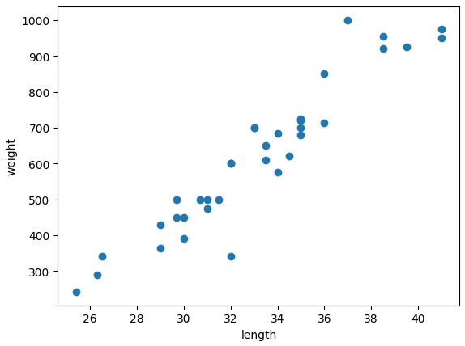
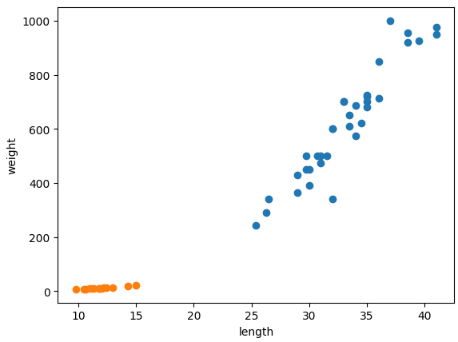
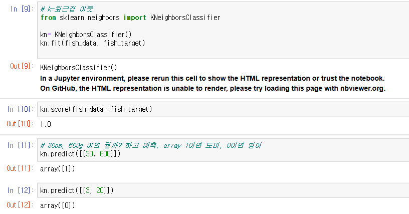
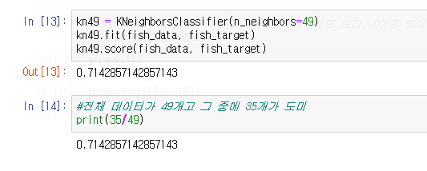
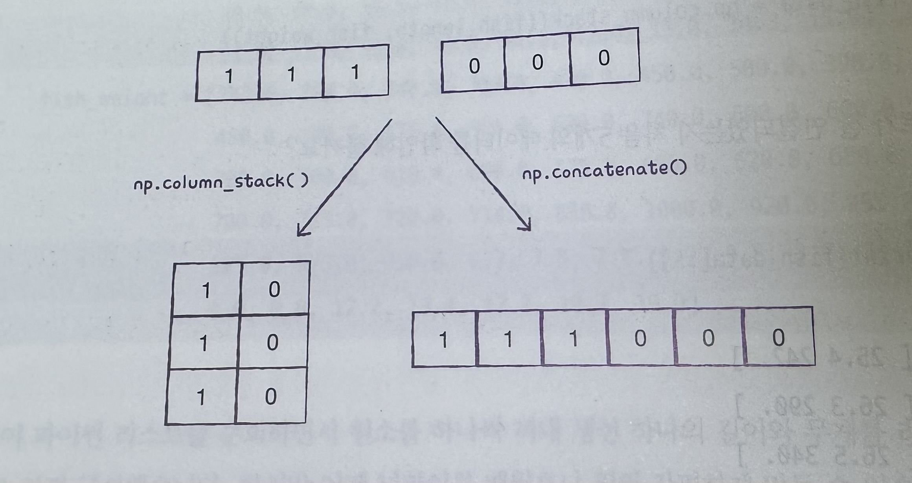
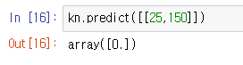
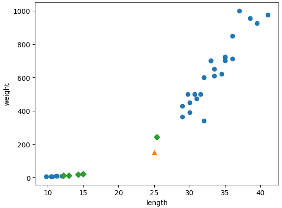
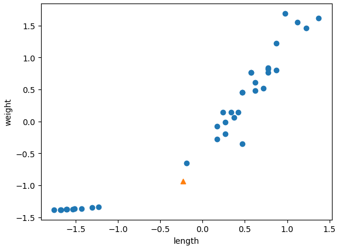
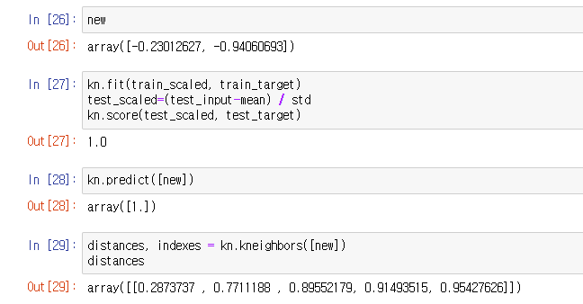
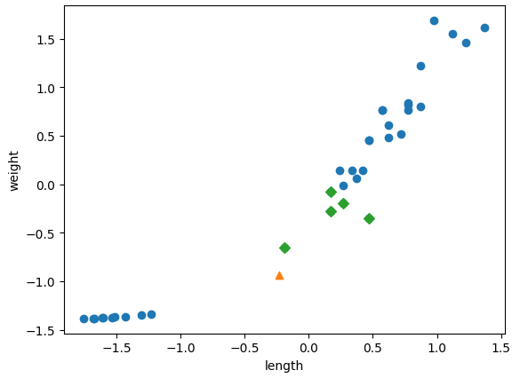

혼자 공부하는 머신러닝 01
1. k-최근접 이웃 알고리즘
유튜브 강의 : https://www.youtube.com/watch?v=GOCVVSMeIf8&list=PLVsNizTWUw7HpqmdphX9hgyWl15nobgQX
#도미데이터
bream_length = [25.4, 26.3, 26.5, 29.0, 29.0, 29.7, 29.7, 30.0, 30.0, 30.7, 31.0, 31.0, 31.5, 32.0, 32.0, 32.0, 33.0, 33.0, 33.5, 33.5, 34.0, 34.0, 34.5, 35.0, 35.0, 35.0, 35.0, 36.0, 36.0, 37.0, 38.5, 38.5, 39.5, 41.0, 41.0]
bream_weight = [242.0, 290.0, 340.0, 363.0, 430.0, 450.0, 500.0, 390.0, 450.0, 500.0, 475.0, 500.0, 500.0, 340.0, 600.0, 600.0, 700.0, 700.0, 610.0, 650.0, 575.0, 685.0, 620.0, 680.0, 700.0, 725.0, 720.0, 714.0, 850.0, 1000.0, 920.0, 955.0, 925.0, 975.0, 950.0]
import matplotlib.pyplot as plt
plt.scatter(bream_length, bream_weight)
plt.xlabel('length')
plt.ylabel('weight')
plt.show()

.
.
# 빙어 데이터
smelt_length = [9.8, 10.5, 10.6, 11.0, 11.2, 11.3, 11.8, 11.8, 12.0, 12.2, 12.4, 13.0, 14.3, 15.0]
smelt_weight = [6.7, 7.5, 7.0, 9.7, 9.8, 8.7, 10.0, 9.9, 9.8, 12.2, 13.4, 12.2, 19.7, 19.9]
plt.scatter(bream_length, bream_weight)
plt.scatter(smelt_length, smelt_weight)
plt.xlabel('length')
plt.ylabel('weight')
plt.show()

빙어는 주황색, 도미는 파란색
크기와 무게가 주어졌을 때, 빙어인지 도미인지 판단하는 머신 러닝
# 한 리스트에 두 데이터 합치기
length = bream_length + smelt_length
weight = bream_weight + smelt_weight
#2차원 배열로 만들기
fish_data = [[l,w] for l,w in zip(length, weight)]
#정답 데이터 준비. 도미인지 빙어인지 정답지 --> 지도학습
fish_target = [1]*35 + [0]*14
# k-최근접 이웃
from sklearn.neighbors import KNeighborsClassifier
kn= KNeighborsClassifier()
kn.fit(fish_data, fish_target)
kn.score(fish_data, fish_target)
fit() 함수를 쓰면 모델 학습
kn.predict(리스트의 리스트) -> 원하는(도미인지 빙어인지) 결과값 도출
kn.score()를 했을 때 높을 수록 잘 맞춘다는 뜻 (정확도)

KNeighborsClassifier는 클래스의 기본값이 5.
만약 데이터를 49개(지금 도미, 빙어 데이터 전체 개수가 49개)를 사용하게 되면
49개 데이터 중에 도미가 35개로 다수라서, 어떤 데이터를 넣어도 무조건 도미로 예측

.
.
2. 넘파이 변형
import numpy as np
## 넘파이 배열로 변경
input_arr = np.array(fish_data)
target_arr = np.array(fish_target)
.
방법1 : 넘파이 셔플을 통해 순서 재배치
index = np.arange(49) ## 0~48
np.random.shuffle(index)
train_input = input_arr[index[:35]]
train_target = target_arr[index[:35]]
test_input= input_arr[index[35:]]
test_target = target_arr[index[35:]]
## 훈련
kn.fit(train_input, train_target)
.
방법2 : 사이킷런 사용
## np.column_stack() 옆으로 붙이기
np_fish_data = np.column_stack((fish_length, fish_weight))
## np.concatenate() 한줄로 이어 붙이기
np_fish_target = np.concatenate((np.ones(35), np.zeros(14)))

from sklearn.model_selection import train_test_split
train_input, test_input, train_target, test_target = train_test_split(
np_fish_data, np_fish_target, stratify=np_fish_target, random_state=42)
kn = KNeighborsClassifier()
kn.fit(train_input, train_target)
kn.score(test_input, test_target)
.
.
3. 스케일 조정
길이25cm 무게150g인 생선은? 도미.
하지만 kn.predict([[25, 150]])할 경우 빙어로 분류한다

import matplotlib.pyplot as plt
plt.scatter(train_input[:,0], train_input[:,1])
plt.scatter(25,150, marker='^')
plt.scatter(train_input[indexes,0], train_input[indexes,1],marker='D')
plt.xlabel('length')
plt.ylabel('weight')
plt.show()
distances, indexes = kn.kneighbors([[25, 150]])

주황색 세모가 25,150도미
가까운 이웃 5개를 표기한 초록색 다이아몬드 중에 4개는 빙어다
y축과 x축 스케일이 맞지 않아서 생긴 일
# x, y축 스케일 맞추면?
##표준 점수로 바꿔서 스케일 맞추기
mean = np.mean(train_input, axis=0)
std = np.std(train_input, axis=0)
print(mean, std)
##[ 27.29722222 454.09722222] [ 9.98244253 323.29893931]
train_scaled = (train_input - mean) / std
new = ([25, 150] -mean) / std
plt.scatter(train_scaled[:,0], train_scaled[:,1])
plt.scatter(new[0],new[1], marker='^')
plt.xlabel('length')
plt.ylabel('weight')
plt.show()

kn.fit(train_scaled, train_target)
test_scaled=(test_input-mean) / std
kn.score(test_scaled, test_target)

plt.scatter(train_scaled[:,0], train_scaled[:,1])
plt.scatter(new[0], new[1], marker='^')
plt.scatter(train_scaled[indexes,0], train_scaled[indexes,1],marker='D' )
plt.xlabel('length')
plt.ylabel('weight')
plt.show()
